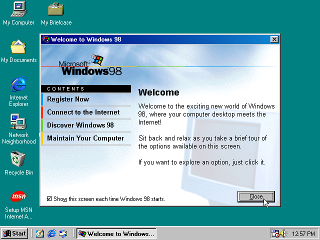
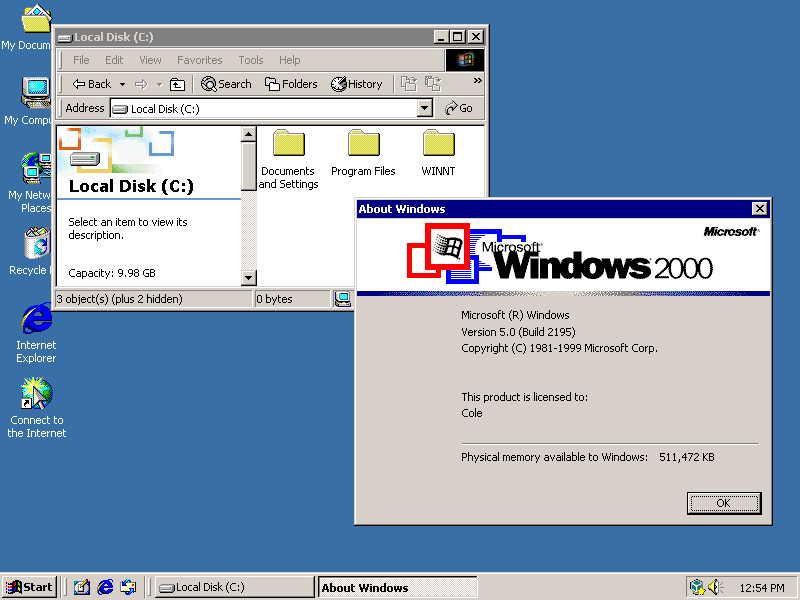

Released in 1990 (and Updated to 3.1 in '92). Windows 3 was the magnum opus of Microsoft in the OS market. The creation of protected multitasking
to insure Windows-Based Apps ran without problem and further separating the shell from DOS was massive, and the later addition of Sound Card and CD-ROM
support future proofed the OS farther than any GUI-based OS had gone. This OS was the start of a long line of very successful operating systems.
Windows 95/NT 4.0 Domination of the Market
Released in the Summer of '95; It started the long line of Windows 9x products and continued to power Microsoft's major advantage in the PC
marketplace. With a major refresh to the GUI, implementing a new Taskbar and Start Menu which we still see today. As well as adding new networking features, Plug-In-Play technologies,
and switching from a 16-Bit architecture to a 32-Bit one, which allowed for pre-emptive multitasking and the use of Long File Names.
The OS later updated to controversially include Internet Explorer 3 and 4 which was seen as an attack on the competition (Mainly NetScape Navigator).
Nonetheless the OS still powered on for a long time serving as the flagship Microsoft OS until 1998 and still stands as one of the most successful operating systems to-date.
Windows 98 Controversially Good

Released in the Spring of 1998, Windows 98 was a very notable release which further sought out Microsoft's domination in the PC market.
Refreshing the UI with some new millennial like styles and a much needed refresh of older WIN16 apps. Also added was the very innovative
but now majorly disliked FAT32 file system, as well as enhancing Networking capabilities, and adding ACPI and USB support.
The creation of WDM (Windows Driver Model) helped unify and simplify installation of new drivers and lead to the creation of Microsoft's
DirectX line of Software Packages, and Windows Update was introduced to help keep the OS secure and away from any vulnerabilities.
Later done in 1999 was the Second Edition of Windows 98 which added some small improvements and software updates to the OS.
Windows 2000 Just a year short

Ironically released in 1999, Windows 2000 was the first step in Microsoft's NT line of OS's to be more closely aimed at the consumer market.
While NT 3.1 and 4.0 were completely aimed at the business, enterprise, and database/server market, 2000 was (due to the lackluster release of ME) aimed at both business and consumer.
It was the first OS to include NTFS 3.0 which included lots of great features like Encrypting File System, Disk Quotas, and more. It also included the new refreshed UI from 98 and a new version of DirectX.
It was a very stable OS and was the first NT based OS to include the Windows Update feature which allowed for easy updating of the OS and other Microsoft Software.
While security flaws were found in the OS later on, it was still a very successful OS and was the first step in the NT line of OS's to start being aimed at the consumer market.